El Objeto Window
Se trata del elemento HTML con mayor jerarquía dentro de la página web, ya que este se refiere a la ventana del navegador en sí, por lo tanto todos los demás elementos HTML dependen de este, incluyendo al mismísimo DOM, en otras palabras permite manipular el comportamiento de toda la ventana del navegador desde JavaScript, así como obtener datos de esta, por lo tanto la cantidad de usos que se le puede dar al objeto Window es inmensa.
Debido a esto en este apartado únicamente se abordará los temas de mayor importancia así como los de mayor utilidad a la hora de programar con JavaScript.
Nota: El objeto Window hereda las propiedades de EventTarget.
Métodos y Propiedades
Open( )
-
Este método permite abrir una nueva pestaña, para lo cual es necesario indicar la dirección de la nueva ventana, la cual debe ser ingresada como dato dentro del método, como se puede apreciar en el ejemplo:
Ejemplo
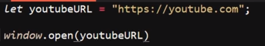
Close( )
-
Este método permite cerrar una ventana que haya sido abierta con el método "open( )", tal como se puede apreciar en el siguiente ejemplo:
Ejemplo
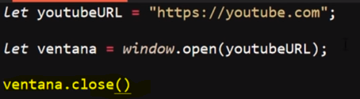
Closed
-
Esta propiedad tiene la función de comprobar si la pestaña referenciada se encuentra abierta o cerrada, para lo cual retorna un valor booleano, el cual será "true" si la pestaña está cerrada y "false" si la pestaña se encuentra abierta.
Ejemplo
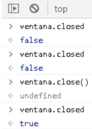
Stop( )
-
Este método permite detener la carga de la ventana referenciada así esta no se haya concluido, en otras palabras permite interrumpir la carga de la página que se encuentre en la nueva ventana en el momento que se desee.
Ejemplo
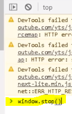
Nota: En este ejemplo se aprecia el método siendo utilizado en la consola del navegador para interrumpir la carga de "YouTube" antes que esta se complete.
Alert()
-
Este método muestra un cuadro de alerta con el contenido especificado dentro, y un botón de aceptar:
Ejemplo
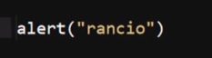
Resultado
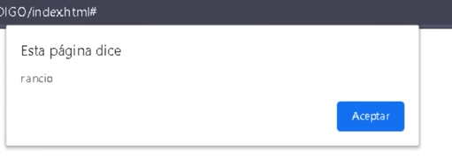
Print( )
-
Este método abre un menú de configuración de impresión con el fin de imprimir la página actual, por lo tanto este método literalmente permite gestionar una impresión real de la página.
Ejemplo
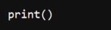
Resultado
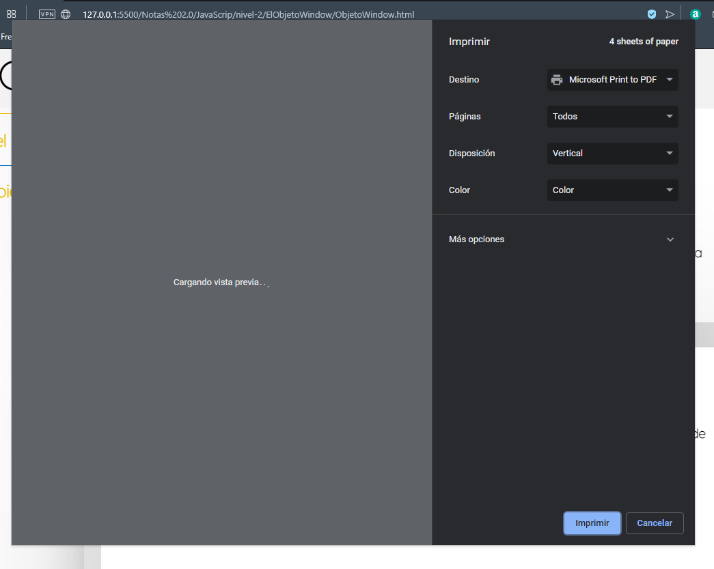
Prompt()
-
Este método retorna un string ingresado por el usuario, para lo cual este método dispara una alerta que contendrá un mensaje previamente definido por el programador y un cuadro de texto, el cual se utilizará para almacenar la respuesta del usuario.
Ejemplo
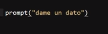
Resultado
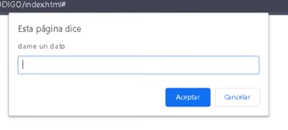
Nota: Independientemente de lo que se ingrese, en este método siempre retornará un dato de tipo string.
Confirm( )
-
Este método tiene la función de comprobar que el usuario desea realizar una acción en específico, para lo cual se dispara una alerta que incluye un mensaje definido, así como botones para cancelar y confirmar, en base a la opción seleccionada por el usuario el método retornará un valor booleano ya sea "true" o "false".
Ejemplo
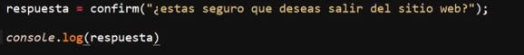
Resultado
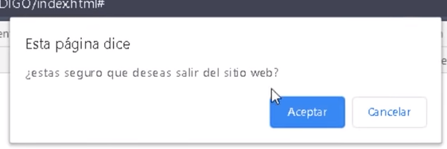
Consola
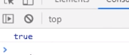
Nota: Actualmente su uso ha disminuido ya que existen otras opciones a la hora de corroborar las intenciones del usuario, sin embargo se sigue usando para aquellas ocasiones en las que es probable que el usuario haya iniciado una acción por error, por ejemplo el salir accidentalmente de la página web.
Screen
-
Esta propiedad se trata de uno de los objetos que posee el objeto window, para trabajar con la pantalla del dispositivo, por lo tanto se puede acceder a las propiedades del Screen
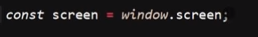
Algunas de estas propiedades son:
Screen.availHeight: Se trata de la altura que puede tener la window del browser si está maximizada.
Screen.availWidth: Se trata del ancho que puede tener la window del browser si está maximizada.
Screen.height: Básicamente se trata del alto total de la pantalla.
Screen.width: Básicamente se trata del ancho total de la pantalla.
ScreenLeft y ScreenTop
-
Estas propiedades permiten conocer la posición en la que se encuentra el navegador dentro de la pantalla del dispositivo, para hacerlo estas propiedades devuelven la distancia entre los bordes del navegador y los bordes de la pantalla.
-
ScreenLeft: retorna la distancia entre el borde izquierdo del navegador y el borde izquierdo de la pantalla, (posición en el eje X).
-
ScreenTop: retorna la distancia entre el borde superior del navegador y el borde superior de la pantalla, (posición en el eje Y).
Ejemplo
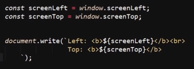
Resultado
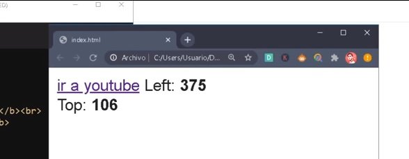
En este ejemplo se puede apreciar el cómo se imprime en pantalla el valor retornado por estas propiedades, el cual corresponde a la posición ocupada actualmente por el navegador dentro de la pantalla del dispositivo, es decir la distancia entre los bordes de la pantalla y los bordes del navegador.
Nota: Estas propiedades se tratan de solo lectura, no de escritura, por lo tanto no pueden ser modificadas.
ScrollX y ScrollY
-
Estas propiedades permiten conocer el qué tanto se ha desplazado el documento vertical y horizontalmente, es decir estas propiedades retornan la cantidad de píxeles que se ha desplazado el usuario hasta ese momento por la página tanto en el eje X como en el eje Y, en otras palabras se podría decir que estas permiten conocer la posición del usuario dentro del documento.
Ejemplo
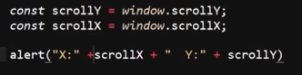
Resultado
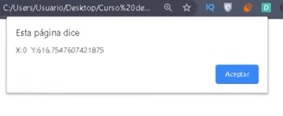
En este ejemplo se puede apreciar el cómo se dispara una alerta con el valor de las propiedades, el cual corresponde a la posición en la que se encuentra el usuario en el documento actual (El "ScrollX" vale 0 ya que horizontalmente no se ha generado desplazamiento, solo se ha producido desplazamiento vertical.)
Scroll y ScrollTo
-
Estas propiedades son casi exactamente iguales, ambas permiten desplazar al usuario hasta una posición predeterminada del documento, es decir esta propiedad genera un desplazamiento hasta un lugar predefinido del documento.
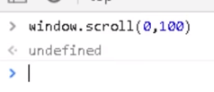
En este ejemplo se puede apreciar el cómo se usa la propiedad "Scroll" en la consola del navegador para desplazarse por una página.
ResizeBy y ResizeTo
-
Estas propiedades son muy parecidas entre sí, con la única diferencia de que una es relativa mientras que la otra es absoluta, el efecto de ambas es la de modificar el tamaño de una ventana emergente (propiedad open( )).
ResizeBy
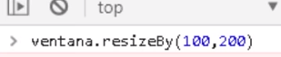
ResizeTo
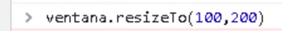
Nota: existen ciertas condiciones y regulaciones para el uso de estas propiedades, especialmente cuando se trabaja con páginas de terceros, sin embargo no se profundiza en estos debido al poco uso se les da a estas propiedades.
MoveBy y MoveTo
-
Estas propiedades son muy parecidas entre sí, con la única diferencia de que una es relativa mientras que la otra es absoluta, el efecto de ambas es la de mover la ventana emergente (propiedad open( )) a una posición pre-definida.
MoveBy
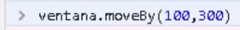
MoveTo
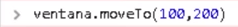
Nota: existen ciertas condiciones y regulaciones para el uso de estas propiedades, especialmente cuando se trabaja con páginas de terceros, sin embargo no se profundiza en estos debido al poco uso se les da a estas propiedades.
Location
El objeto Location pertenece al igual que otros tantos al objeto window, este objeto se enfoca en los aspectos relacionados con los dominios y direcciones web del documento, por lo tanto posee varios métodos con el fin de obtener todos estos datos.
A su vez la siguiente imagen referencia de forma simple la estructura de la URL de una página web.
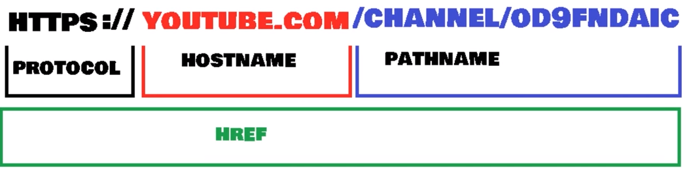
Nota: HostName y dominio web son dos cosas diferentes, ya que un HostName podría llegar a ser una IP o cualquier código funcional, mientras que un dominio se trata de traducir direcciones IP a términos memorizables para las personas.
Href
-
Esta propiedad retorna la ubicación completa del archivo, es decir esta propiedad retorna la ruta completa del archivo que se está ejecutando.
Ejemplo
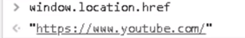
HostName
Esta propiedad retorna el nombre del dominio del servidor web en el que se encuentra alojado el archivo.
Ejemplo
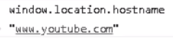
pathName
-
Este método retorna la ruta al archivo desde el dominio de origen, es decir retorna en qué parte del dominio se encuentra el archivo actual.
Ejemplo
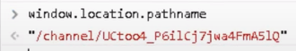
Protocol
-
Este método retorna el protocolo con el que trabaja el servidor web.
Ejemplo
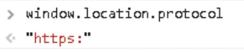
Assign()
Este método permite cargar un nuevo documento, el cual debe ser definido dentro de los paréntesis de este método.
Ejemplo
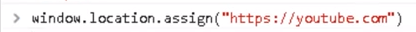